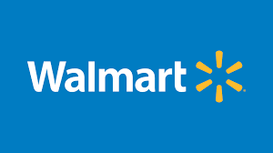

The software companies
GOOGLE
 CEO- Sundar Pichai
FOUNDER- Larry page , Surgey bin
PRODUCT BASED COMPANY- Google Maps,Google SearchEngine,Google Clouds,Google Drives
CEO- Sundar Pichai
FOUNDER- Larry page , Surgey bin
PRODUCT BASED COMPANY- Google Maps,Google SearchEngine,Google Clouds,Google Drives
-
VISION
-
Google’s vision statement and mission statement
emphasize innovation and excellence. The firm’s strategic objectives are
also based on its mission statement and vision statement.
-
MISSION
- Google’s mission statement and vision statement
reflect the powerful position of this company in terms of what it wants
to achieve. Founded in 1998, the company has been following its mission
statement and vision statement, leading to its current position as one
of the most valuable brands in the world.
MICROSOFT
- CEO- Satya Nadella
- FOUNDER- Bill Gates
- PRODUCT BASED COMPANY-Microsoft Binge,Microsoft Edge,Microsoft Exel
-
VISION
- A vision statement is a business document that states the current and future objectives of an organization. A company's vision must align with its mission, strategic planning, culture, and core values.
-
MISSION
- Our mission is to empower every person and every organization on the planet to achieve more.
AMAZON.co

- CEO- Andy Jassy
- FOUNDER-Jeff Bezos
- PRODUCT BASED COMPANY-E-Commerce Site,Amazon Kindle
-
VISION
- be Earth's most customer-centric company, where customers can find and discover anything they might want to buy online, and endeavours to offer its customers the lowest possible prices.
-
MISSIION
- We strive to offer our customers the lowest possible prices, the best available selection, and the utmost convenience.
TESLA
- CEO- Elon Musk
- FOUNDER-Elon Musk,Martin Eberhard
- PRODUCT-Automobile,Charge Station
-
VISION
- a business document that states the current and future objectives of an organization
-
MISSION
- To be Earth's most customer-centric company, where customers can find and discover anything they might want to buy online
YOUTUBE

- CEO- Susan Wojcicki
- FOUNDER-Javed Karim,Chad Hurley,Steve Chen
- PRODUCT BASED-Entertaintment Content Videos
- VISION
- We strive to offer our customers the lowest possible prices, the best available selection, and the utmost convenience.
-
MISSION
- to give everyone a voice and show them the world
APPLE

- CEO- Tim Cook
- FOUNDER-Steve Jobs
- PRODUCT-Hardware,IoS Operating System
-
VISION
- To make a contribution to the world by making tools for the mind that advance humankind
-
MISSION
- Apple strives to bring the best personal computing experience to students, educators, creative professionals, and consumers around the world through its innovative hardware, software, and internet offerings
WALLMART

- CEO-Dough McMillon
- FOUNDER-Sam Walton
- SERVICE BASED- E-Commerce site
-
VISION
- We aim to build a better world — helping people live better and renew the planet while building thriving, resilient communities
-
MISSION
- For us, this means working to create opportunity, build a more sustainable future, advance diversity, equity and inclusion and bring communities closer together.
SAMSUNG

- CEO- Kim Ki Nam
- FOUNDER-Koh Dong-Jin
- PRODUCT BASED COMPANY- Android based
-
VISION
- A mission statement defines the organization's business, its objectives, and how it will reach these objectives. A vision statement details where the organization aspires to go.
-
MISSION
- to devote its talent and technology to creating superior products and services that contribute to a better global society.
ADOBE

- CEO- Shantanu Narayen
- FOUNDER-Charles Geschke
- PRODUCT BASED COMPANY- Abode Reader,Scanner
-
VISION
to bring the best user experience to its customers through its innovative hardware, software, and services.
-
MISION
Great experiences have the power to inspire, transform, and move the world forward. And every great experience starts with creativity.
DATABRICKS
- CEO- Ali Ghodsi
- FOUNDER-Ion Stonica
- SERVICE BASED COMPANY-Gives Data Management Service
-
VISION
to accelerate innovation for its customers by unifying Data Science, Engineering and Business
MISSION
-
to make big data simple for the enterprise